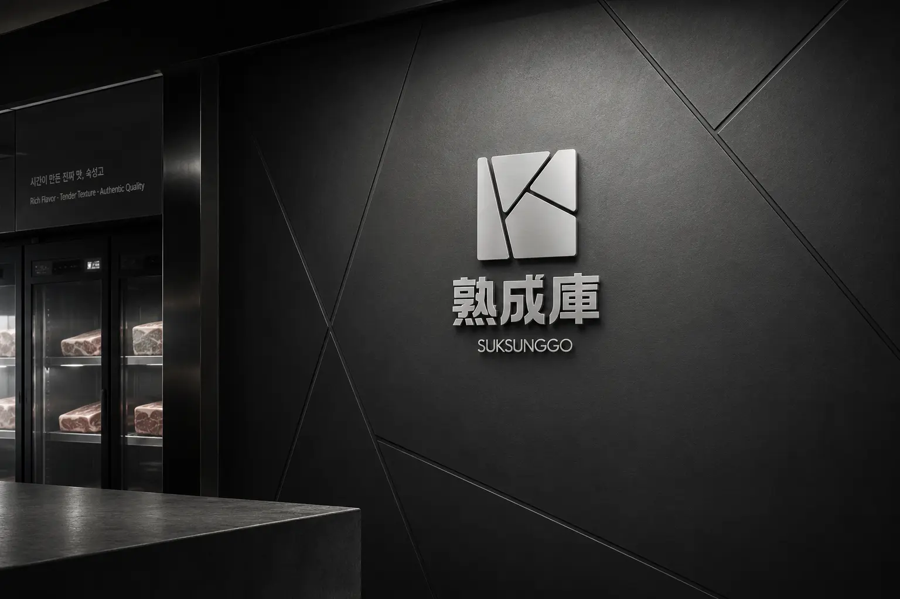
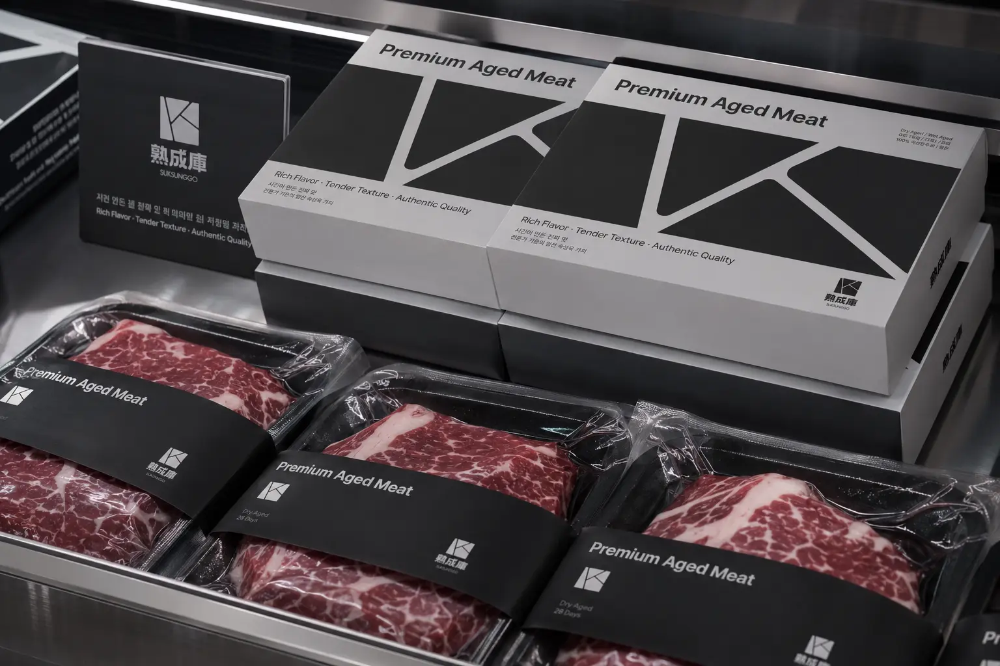
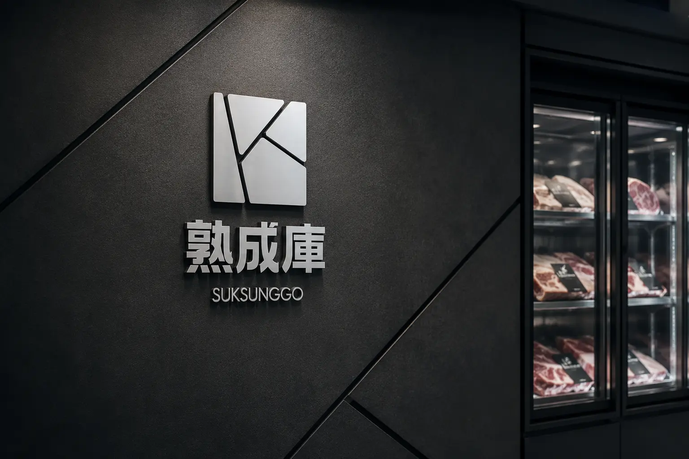
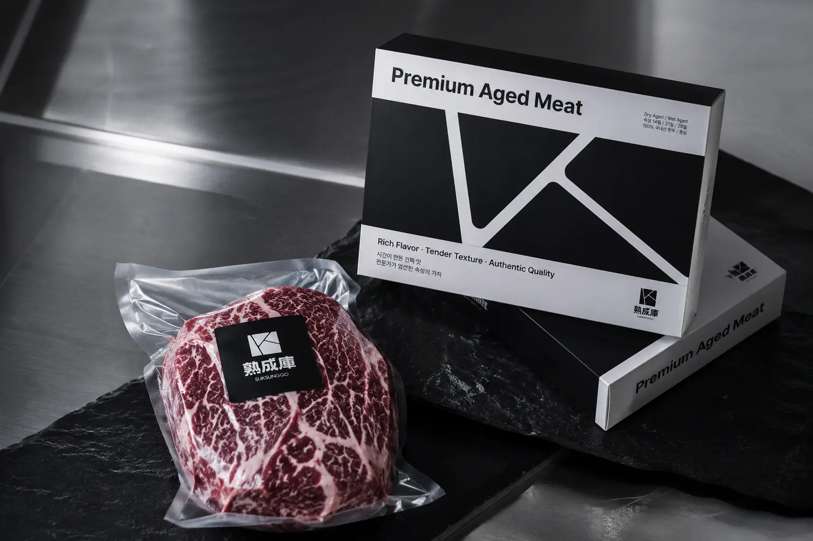
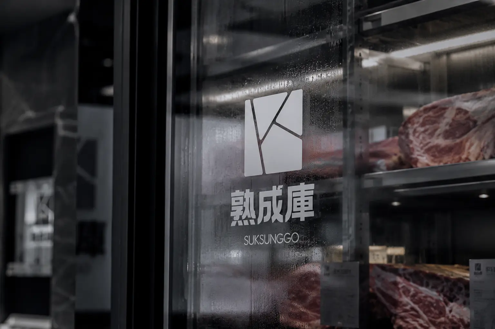
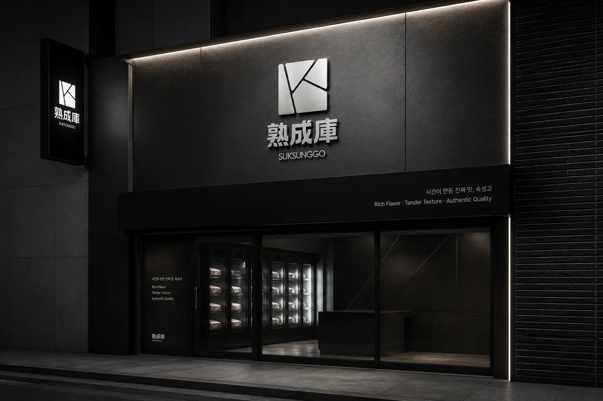
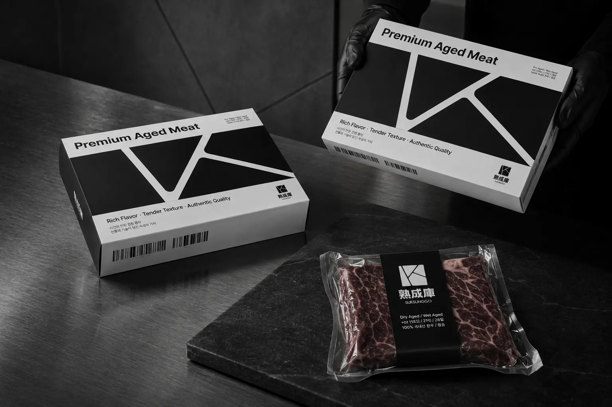
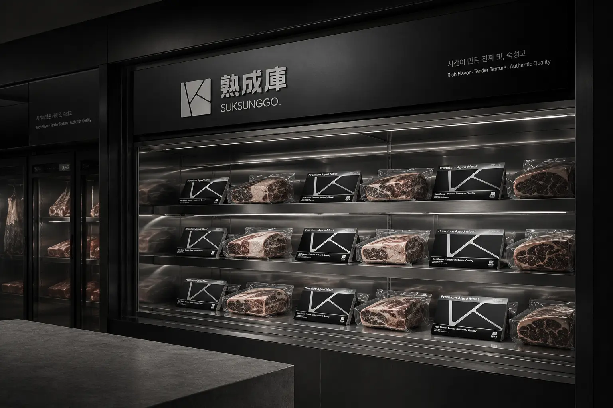

숙성고의 목표는 숙성육이 가진 풍미, 부드러운 식감, 전문적인 품질 관리를 고객이 직관적으로 느낄 수 있도록 만드는 것이다. 브랜드는 고기의 품질뿐 아니라 매장 분위기, 패키지 디자인, 진열 방식까지 하나의 고급 경험으로 연결한다. 제품 패키지에는 Premium Aged Meat라는 메시지를 명확하게 적용해 브랜드의 전문성을 직접적으로 전달한다. 블랙과 메탈릭 소재 중심의 공간 구성은 숙성 과정의 깊이와 고급스러운 이미지를 동시에 강조한다. 최종적으로 숙성고를 일반 정육점이 아닌, 신뢰하고 선택할 수 있는 프리미엄 숙성육 브랜드로 자리 잡게 하는 것을 목표로 한다.
Portfolio / Brand Identity
숙성고
숙성고는 시간과 숙성 과정을 통해 고기의 풍미와 식감을 완성하는 프리미엄 숙성육 브랜드이다. 브랜드는 “시간이 만든 진짜 맛”이라는 방향을 중심으로, 일반 정육 제품과 차별화된 고급스러운 육류 경험을 전달한다. 전체적인 무드는 블랙과 실버를 기반으로 구성되어 있으며, 숙성육이 가진 깊이감과 전문성을 시각적으로 표현한다. 매장 공간, 쇼케이스, 패키지, 진공 포장, 사인물 등 모든 접점에서 정제된 고급 이미지를 유지해 브랜드의 신뢰도를 높인다. 숙성고는 단순히 고기를 판매하는 브랜드가 아니라, 숙성이라는 시간의 가치를 프리미엄한 방식으로 전달하는 전문 정육 브랜드로 설계되었다.
- Scope
- Brand Identity / F&B
- Studio
- BDLab
- Year
- 2026

숙성고의 핵심 메시지는 “시간이 만든 진짜 맛”으로 정리할 수 있다. 이는 단순히 고기를 숙성했다는 기능적 설명을 넘어, 기다림과 관리의 과정을 통해 완성된 깊은 풍미를 의미한다. “Rich Flavor · Tender Texture · Authentic Quality”라는 문구는 숙성고가 전달하고자 하는 맛, 식감, 품질의 가치를 명확하게 보여준다. 브랜드 메시지는 과장된 표현보다 짧고 단단한 문장으로 구성되어 프리미엄 정육 브랜드의 신뢰감을 만든다. 전체적으로 숙성고는 시간, 풍미, 부드러운 식감, 진정성 있는 품질을 중심으로 브랜드 방향성을 전개한다.
숙성고의 디자인은 블랙 컬러와 실버 메탈 소재를 중심으로 한 고급스러운 정육 브랜드 시스템이 핵심이다. 매장 공간은 어두운 벽면, 스테인리스 쇼케이스, 간접 조명을 활용해 숙성육의 깊이감과 전문적인 이미지를 강조한다. 패키지는 블랙과 화이트의 강한 대비를 사용해 고기 본연의 색감이 더 선명하게 보이도록 구성되어 있다. 사선으로 분할된 그래픽 요소는 숙성고 로고와 연결되며, 고기의 마블링과 숙성 공간의 구조적인 이미지를 함께 연상시킨다. 디자인 전반은 일반 식품 브랜드보다 더 묵직하고 세련된 인상을 주는 프리미엄 리테일 브랜딩에 가깝다.






